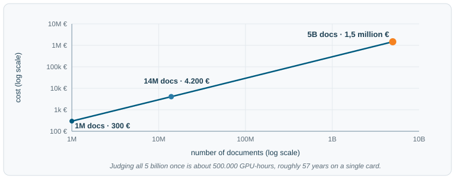

The quality question
Last updated on 2026-11-02 | Edit this page
Overview
Questions
Objectives
The quality question
Part 1 built a pipeline that asks one question of every document: is this well-formed? The cheap surface checks answered it by counting characters and lines, and Part 2 showed that they scale to hundreds of terabytes precisely because they are so cheap. This part asks the question those checks cannot reach: of the documents that are well-formed, which ones are actually worth learning from? That is the quality question, and it is where the easy answers end.
Surface heuristics: cheap, transparent, blind
The surface metrics from Part 1, the cheap quality signals it filtered on, are surface heuristics: fixed rules that measure a document’s shape, how its characters and lines are arranged, the same way for every document. They cost almost nothing per document, which is what lets them run across web scale. They are transparent: a rule like “drop documents with fewer than four words per line” can be read, audited, and reasoned about. And they are deterministic, so the same document always gets the same verdict.
What they cannot do is see value. A document can be
perfectly well-formed and still be worthless to train on, and a
heuristic, counting only surface features, gives it the same verdict as
a genuinely useful one. And value takes more than one form: a document
can be judged on how densely it packs information, on how well it is
written, on how accurate it is. Here are two documents checked by the
very same prefilter from Part 1,
looks_like_prose remains unchanged:
PYTHON
# words_per_line(), symbol_share(), and looks_like_prose() are the Part 1 prefilter.
documents = {
"explainer": "Photosynthesis converts sunlight into chemical energy.\n"
"Plants combine water and carbon dioxide to build sugars.",
"spam": "Best cheap flights, book cheap flights online today.\n"
"Cheap flights deals, find cheap flights and save now.",
}
for name, text in documents.items():
verdict = "clean" if looks_like_prose(text) else "DROP"
print(f"{name:9} words/line={words_per_line(text):4.1f} "
f"symbols={symbol_share(text):3.0%} -> {verdict}")Both pass. The same prefilter that dropped Part 1’s nav menu and log dump keeps these two, yet only one is worth training on. The prefilter cannot tell them apart, because it counts the shape of the text and never reads what the words mean.
Form and value as two axes
Picture every document placed on a grid. One axis is form, how well-formed the document is; the other is value, how much it is worth learning from. A surface heuristic reads only the horizontal axis, so any filter built on it can draw just one kind of line: a vertical cut that keeps the well-formed half and drops the rest, whatever those documents are worth. On the two diagonal cases that cut is right. A well-formed, valuable article is kept, and a malformed, worthless log dump is dropped. The other two corners are where it fails. A well-formed but worthless page, the spam from a moment ago, is kept; a substantive page that happens to look messy, say dense code or terse notes, is dropped. Those two corners are the price of judging form alone.
![A two-by-two grid. The horizontal axis is form, from poorly formed on the left to well-formed on the right. The vertical axis is value, from low at the bottom to high at the top. A vertical dashed line down the middle marks where a surface heuristic cuts: it keeps everything on the well-formed right half and drops the left half, regardless of value. Two corners are shaded as errors: the top-left, substantive but messy documents that the heuristic wrongly drops, and the bottom-right, well-formed but worthless documents such as spam that it wrongly keeps. Examples sit in each quadrant: an encyclopedia article top-right, spam bottom-right, a nav menu bottom-left, dense code or terse notes top-left.](fig/part3/shape-vs-value.svg)
Figure 8: Surface heuristics judge a document’s form, so they cut along one axis only. The two shaded corners, well-formed but worthless and substantive but messy, are where a form-only heuristic gets it wrong.
Heuristics do the job they are built for, cheaply and at scale, and they remain the first line of every pipeline. The point here is narrower: form is all they can measure, so value needs a different instrument.
Your turn
The heuristic above scored the spam and the explainer the same. Suppose you are allowed to add as many surface rules as you like: line length, punctuation balance, repeated-phrase ratio, vocabulary size, anything that counts characters or words without understanding them. Sketch a worthless document that still passes every such rule. What property of a document are all of these rules structurally unable to see?
One way to reason about it
Such a document is easy to write: vary the vocabulary, balance the punctuation, keep every line a sensible length, and it passes every count while saying nothing worth learning. Surface rules measure how text is arranged, never what it means, so meaning is the one property they cannot reach. Reading meaning is what a language model does, which is where the next section goes.
Asking a model to judge
If the missing instrument has to read meaning, the obvious candidate is a language model: hand it the full document and ask it to score the value the heuristics could not see. Scoring value means choosing which kind of value to measure. The one put to work at web scale is educational value: how much genuine, learnable information a document carries, rated on a small scale such as 0 to 5 (Penedo et al. 2024). Because the model actually reads the text, it can tell the explainer from the spam in a way no counting rule can.
Further reading
HuggingFace’s FineWeb blog post walks through building exactly such a judge: an LLM scores documents for educational value, and those scores train the FineWeb-Edu quality classifier that filters a web-scale corpus.
The difficulty is that this power is expensive. A surface heuristic is a few arithmetic operations per document; an LLM judgment is a full forward pass through billions of parameters, far more work each time. Multiply that by the roughly five billion surviving documents, and compute becomes the real obstacle.1
The cost in euros
Of those two prices, the compute one can be made concrete. When you build a pipeline like this, the budget decides what you can actually run, as much as the quality you are aiming for does. The budget depends on two things: how much work there is, and what hardware it runs on2.
CPU work and GPU work
The two kinds of processor are good at different things. A GPU packs thousands of small cores that all run the same arithmetic at once, which makes it fast at the dense matrix multiplication inside a neural network and slow at much else.3 A CPU has a few powerful, flexible cores built for sequential logic: branching, comparing, and shuffling data around. Most of a data pipeline is that second kind of work, converting file formats, hashing and comparing documents, reading and writing bytes, none of it matrix arithmetic. So it runs on CPUs, where an hour of compute is cheap.
Recall the Part 2 budget. Conversion, filtering, and deduplication together took about 273.952 CPU hours. At a representative cloud price of four to five cents per CPU hour,4 that whole pipeline costs on the order of 12.000 € to run once. For hundreds of terabytes of processed text, that is remarkably little.
Now imagine running the same work on GPUs, on the intuition that GPUs are faster. A GPU hour costs roughly seventy times a CPU hour,5 and the work gains nothing from one: hashing and string comparison cannot use the matrix hardware you would be paying for. The same pipeline would cost on the order of 800.000 €, and finish no sooner.
Key takeaway
Pay for a GPU only where the work is the dense, parallel arithmetic it is built for. Everything else belongs on a CPU, where it runs just as fast for a fraction of the price.
The judge at web scale
That rule has one exception in this pipeline, and it is the LLM judge. Reading a document for meaning is the dense matrix arithmetic a GPU is built for, so here the expensive hardware earns its price. The bill now has two multipliers working together: a GPU hour is expensive, and there are billions of documents to score.
A heavy judge, a model in the tens of billions of parameters, scores on the order of ten thousand documents per GPU hour.6 At about 3 € per GPU hour that is roughly 0,0003 € per document, which sounds negligible until you count the documents. Filtering leaves on the order of five billion, so judging all of them once comes to about 1,5 million € and around half a million GPU hours, more than fifty years of nonstop work on a single card.
The shape is the one Part 2 made concrete: a cost that is tiny for one document grows enormous once it is paid billions of times over. Plotted against the number of documents, the effect is plain. Judging a small sample is inexpensive; judging the full corpus of survivors costs millions of euros:

Figure 9: The cost of judging documents with a heavy LLM, as the number of documents grows. Affordable on a sample, a major expense across the web.
So the obstacle is the economics. A heavy judge reads meaning more reliably than any counting rule, yet running one across the whole web costs millions of euros and years of GPU time. That turns the next step into a sharp question: can a pipeline keep the judgment of a language model while paying something close to the price of a surface heuristic?
Recap
Part 3 separated two questions that Part 1’s surface heuristics had treated as one. Form asks whether a document is well-formed; value asks whether it is worth learning from. Heuristics settle form cheaply and at any scale, but they measure only the shape of the text, so value stays invisible to them. A language model can read the text and judge its value, but doing that across billions of documents is slow and expensive.
That is the open problem this part leaves on the table: how to get the judgment quality of a language model at the running cost of a surface heuristic. Part 4 is the answer this material follows, and it solves the problem with a move in the spirit of Part 2: trade a large one-time compute cost for a cheap one that runs at scale.
Useful tools
Open-source frameworks package these stages so you do not build them from scratch: DataTrove (the pipeline behind FineWeb) and NVIDIA’s NeMo Curator both handle filtering, deduplication, and large-scale processing. For the LLM-judge idea specifically, propella-1 annotates documents across many quality properties at once rather than a single score, and releases the resulting annotations as a dataset.
Challenge
A second price is cross-lingual certainty: Teuken’s data spans all 24 EU languages, around 60% of it outside English, and whether one judge can rate quality evenly across every one, including low-resource languages it barely saw in training, is an open question. We follow the compute price here, since that is what the next step answers.↩︎
The numbers below are order-of-magnitude illustrations at mid-2026 cloud prices; prices move, so the ratios are the durable part rather than the exact euro amounts.↩︎
A third class of chip, the tensor processing unit (TPU) and a growing field of similar AI accelerators, targets the same dense matrix math as the GPU; for a data pipeline the decision that matters is still CPU versus GPU. Further reading: Google’s introduction to TPUs.↩︎
Representative on-demand Linux CPU price, about 0,045 € per vCPU-hour, roughly 0,034 € to 0,055 € across AWS, GCP, and Azure general-purpose instances, mid-2026. Cloud prices change; the figure is illustrative.↩︎
An NVIDIA H100 runs about 3 € per GPU-hour on specialist clouds and 7 € to 12 € on the large providers, mid-2026. Against about 0,045 € per CPU-hour that is roughly 70 to 250 times more; we use the low end, which is the most favorable to the GPU. Prices change.↩︎
Order-of-magnitude estimate: a roughly 70-billion-parameter judge in fp8 on an H100, batched, scoring documents of about 690 tokens each, processes on the order of 10.000 documents per GPU-hour, derived from public NVIDIA inference benchmarks. Actual throughput varies with model, hardware, and batching.↩︎